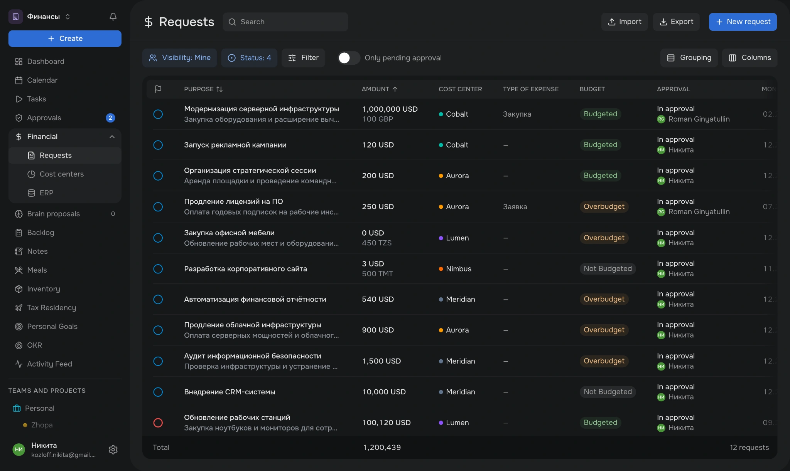
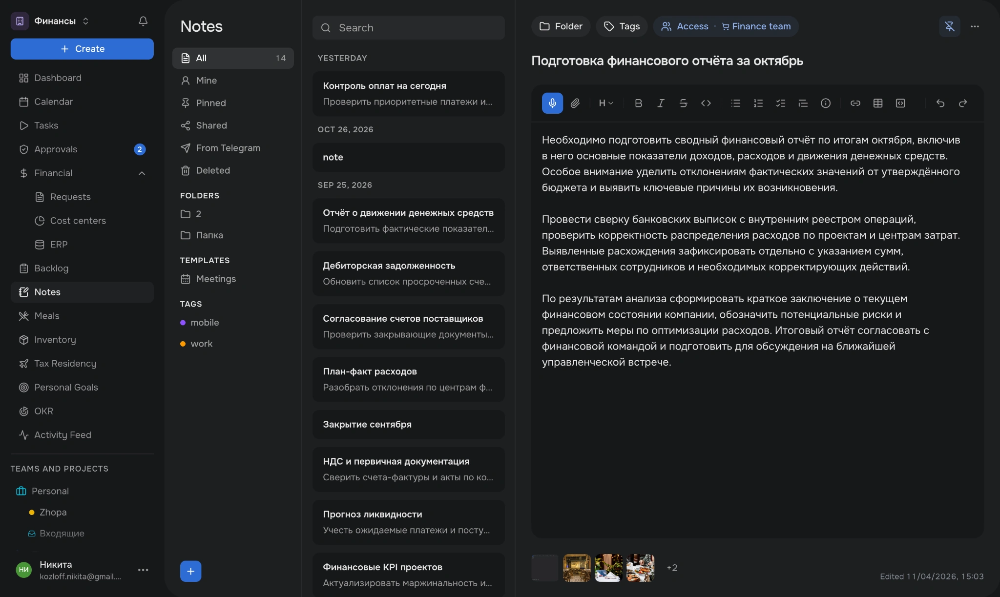
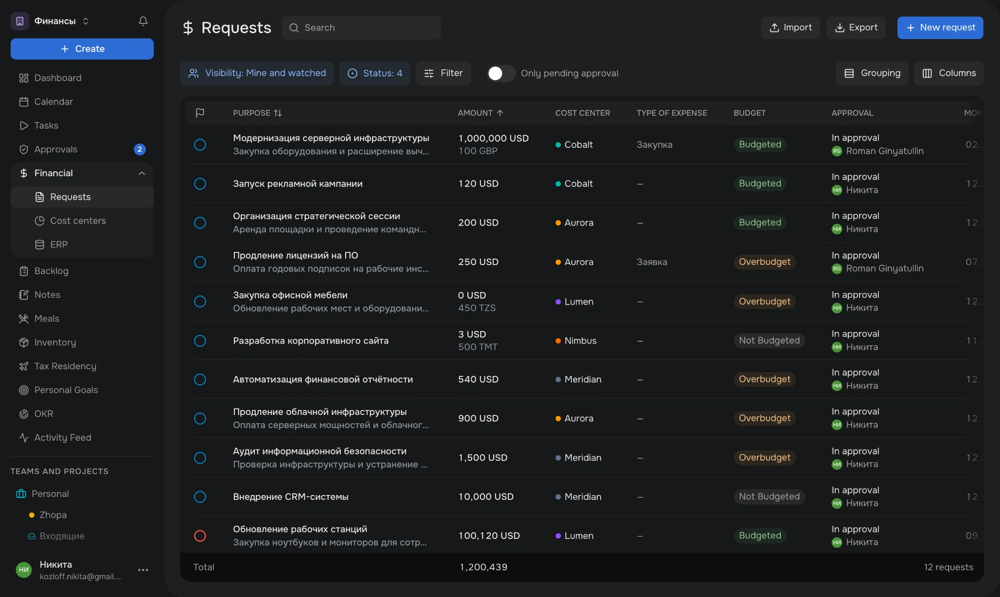
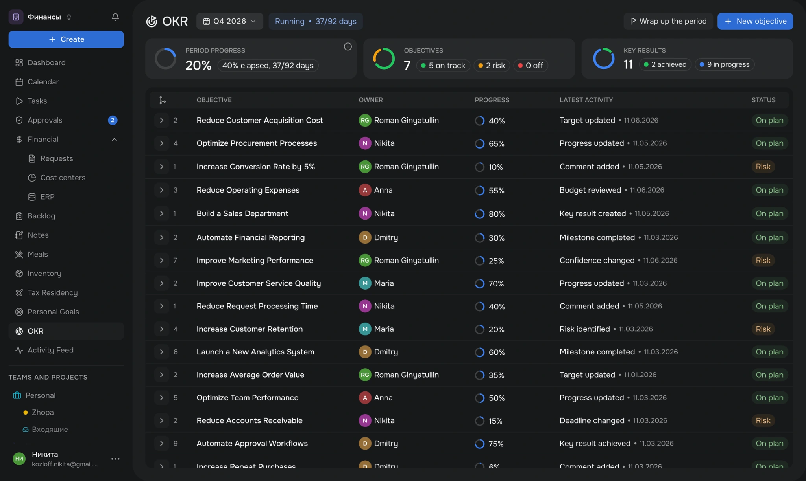
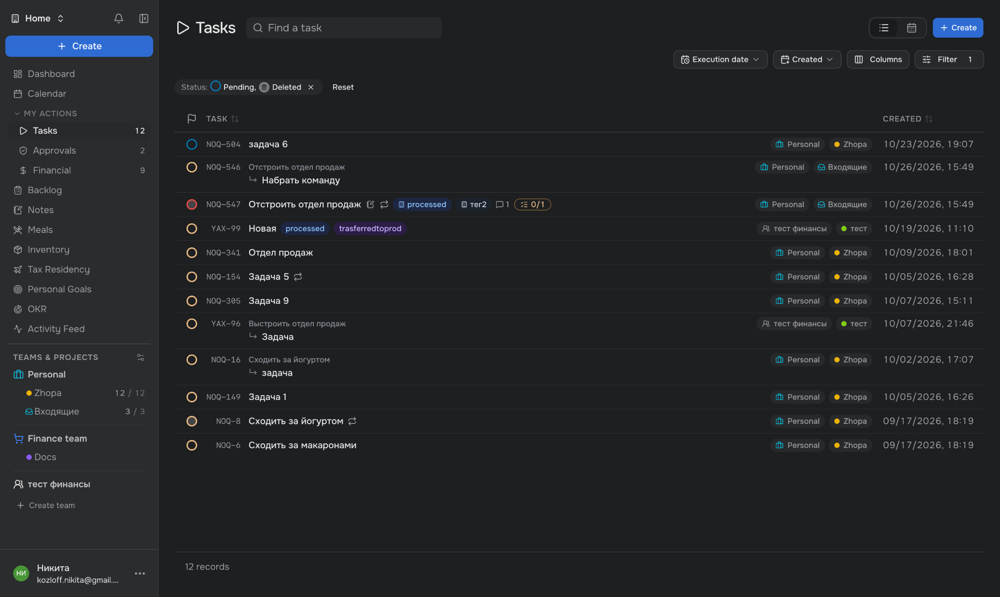
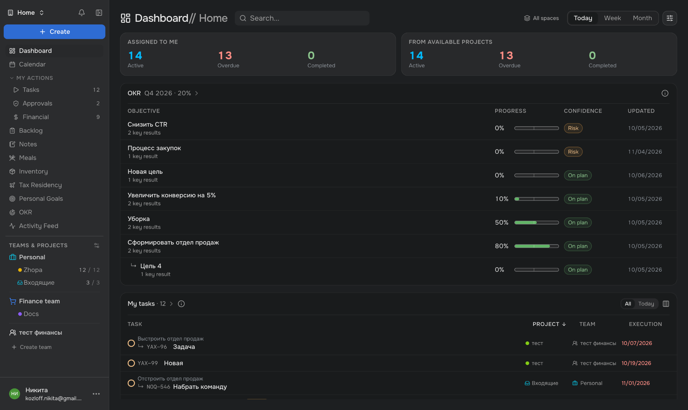

Переосмыслил UX UI консьерж-сервиса и упростил ключевые рабочие сценарии, используя AI вместо Figma
Мой вклад
Discovery, UX Audit, UX/UI Design, Design System, AI Prototyping, Design QA
2026

Мой вклад
Discovery, UX Audit, UX/UI Design, Design System, AI Prototyping, Design QA
2026

Проблема
Платформа уже использовалась в ежедневной работе, но некоторые действия и переходы оставались неочевидными. Сотрудники регулярно сообщали о неудобствах, и заказчик получал негативную обратную связь. Поэтому к проекту привлекли дизайнера, чтобы переработать проблемные сценарии.
| Проблема | Раздел | Что было не так |
|---|---|---|
| Неудобные пользовательские сценарии | Заметки | Существующий интерфейс не всегда был интуитивно понятен: пользователям было трудно разобраться в отдельных действиях и возможностях раздела. |
| Финансовые согласования | Навигация и последовательность действий в ключевых сценариях были недостаточно понятными и затрудняли работу с согласованиями. | |
| Разрозненность визуальных решений | Цвета | В интерфейсе накопилось множество оттенков и локальных исключений. Отсутствовали единая цветовая палитра и правила её применения. |
| Типографика | Использовались несогласованные размеры и начертания шрифтов. Отсутствовала единая типографическая система. |
Задача
| Направление | Задача |
|---|---|
| Финансовые согласования | На основе обратной связи сотрудников переработать навигацию и последовательность действий. |
| Заметки | Сделать существующий интерфейс интуитивнее. |
| Визуальная система | Унифицировать цвета и типографику. |
| Ограничения | Сохранить работающую функциональность и существующую архитектуру платформы. |
Discovery
Во время брифинга выяснил, какие функции необходимы сотрудникам в первую очередь. На основе бизнес-приоритетов заказчика определил последовательность работ: сначала четыре функциональных модуля, затем визуальный редизайн платформы.
| Приоритет | Раздел | Почему |
|---|---|---|
| 1 | Заметки | — |
| 2 | Модуль 2 | — |
| 3 | Модуль 3 | — |
| 4 | Модуль 4 | — |
| 5 | Визуальный редизайн | — |
На момент моего подключения платформа уже имела работающую функциональность и архитектуру. Над продуктом работали разработчики и продуктовый менеджер, но в команде не было дизайнера и готовых макетов в Figma. Поэтому весь процесс проектирования организовал через браузер и AI-инструменты.
| Этап | Как организовал работу |
|---|---|
| Требования | Формулировал функциональные требования и UX/UI-правила для новых и существующих разделов платформы. |
| Прототипирование | Создавал кликабельные прототипы через ChatGPT, не используя Figma. |
| Согласование | Демонстрировал решения в браузере, собирал обратную связь и вносил изменения непосредственно в прототипы. |
| Реализация | Передавал спецификации разработчикам, которые использовали Claude для внесения изменений в код. |
| Проверка | Тестировал реализованные решения на стейдже, выявлял несоответствия и передавал корректировки разработчикам. |
Заметки
Нужно было определить, какие функции действительно нужны пользователям и что не устраивало заказчика в существующем интерфейсе.
| Сценарий | Jobs to Be Done |
|---|---|
| Сохранить информацию | Когда мне нужно зафиксировать личную или рабочую информацию, я хочу быстро создать заметку, чтобы не потерять важные сведения и вернуться к ним позже. |
| Дополнить запись | Когда появляются новые сведения, я хочу легко найти и отредактировать заметку, чтобы информация оставалась актуальной. |
| Сохранить контекст задачи | Когда поручение требует дополнительных пояснений, я хочу прикрепить к нему заметку, чтобы контекст оставался вместе с задачей. |
| AS-IS | TO-BE |
|---|---|
| Заказчик и его ассистент вели заметки в сторонних приложениях на компьютере и телефоне. | Заметки создаются и хранятся непосредственно в корпоративной платформе. |
| Дополнительную информацию к задачам приходилось размещать в небольшом текстовом поле или хранить отдельно. | Заметка становится самостоятельной сущностью, которую можно прикрепить к задаче. |
| Для работы с объёмными записями приходилось переключаться между приложениями. | Встроенный текстовый редактор позволяет работать с объёмными заметками и форматировать содержимое. |
| Самостоятельные заметки не имели отдельного пространства внутри платформы. | Появляется отдельный раздел с быстрым доступом к созданию, просмотру и редактированию заметок. |
На основе Jobs to Be Done определил требования к новому модулю. Заметки должны были стать самостоятельной сущностью с возможностью организации, редактирования и совместного использования, сохранив связь с задачами.
| Раздел | Требования |
|---|---|
| Структура интерфейса | Организовать рабочее пространство в три колонки: навигация по заметкам, список заметок и редактор выбранной записи. |
| Навигация | Предусмотреть категории: все заметки, мои, закреплённые, общие, из Telegram и удалённые. |
| Организация заметок | Добавить папки, теги и шаблоны для структурирования информации и быстрого доступа к ней. |
| Список заметок | Группировать заметки по датам, отображать заголовок и превью содержимого. Предусмотреть закрепление важных записей в верхней части списка. |
| Поиск и создание | Обеспечить быстрый поиск по заметкам и создание новых записей непосредственно из рабочего пространства. |
| Текстовый редактор | Предоставить возможность создавать и редактировать заметки разного объёма прямо внутри платформы, без перехода в сторонние приложения. |
| Форматирование | Поддержать заголовки, жирный, курсивный и зачёркнутый текст, списки разных типов, ссылки, таблицы, блоки кода и другие инструменты форматирования. |
| Управление доступом | Предусмотреть возможность предоставления доступа к заметке отдельным людям или целой команде. |
| Связь с задачами | Позволить прикреплять заметки к задачам, сохраняя возможность использовать их как самостоятельные документы. |
| Вложения | Обеспечить прикрепление файлов и изображений непосредственно к заметке, независимо от её связи с задачами. |
| Управление заметкой | Добавить назначение папки и тегов, закрепление заметки, удаление через меню дополнительных действий и отображение времени последнего редактирования. |
| Раздел | Ограничения / вводные | UX-решение |
|---|---|---|
| 1. Навигация и фильтры | Предполагалось небольшое количество папок и тегов. | Разместил категории, папки и теги в постоянно открытой боковой панели для быстрого доступа к нужным заметкам. |
| 2. Список заметок | Заметок предполагалось немного, при этом они быстро теряли актуальность. | Разместил хронологический список рядом с редактором, предусмотрев закрепление важных записей и переключение между ними без дополнительных переходов. |
| 3. Редактор заметки | Длинные строки усложняют чтение объёмных документов, а переходы на отдельную страницу создают лишние действия. | Ограничил ширину текстовой области до 700–800 px и предусмотрел редактирование заметки непосредственно рядом со списком. |
С помощью ChatGPT собрал кликабельный прототип для демонстрации заказчику. На его основе реализовали и запустили модуль заметок.

Оба участника положительно оценили трёхколоночную структуру: навигация, список заметок и редактор доступны на одном экране, поэтому не нужно переходить между страницами. Замечаний к компоновке по итогам тестирования не возникло.
Финансовые согласования
Разобрал основные действия сотрудника: найти заявку, отфильтровать список, проверить бюджет и статус согласования. Выяснил, что навигация, фильтры и действия над заявками были распределены по разным уровням интерфейса.
| Область | Что было не так | Почему это мешало |
|---|---|---|
| Навигация | Requests, Cost centers и ERP находились во вкладках, хотя представляли самостоятельные разделы с разным содержимым. | Переход между разными рабочими пространствами выглядел как переключение вида одной страницы. |
| Иерархия экрана | Поиск и основные действия располагались над вкладками, определяющими текущий раздел. | Было неочевидно, к какому разделу относится поиск и набор действий после переключения вкладки. |
| Фильтрация | Переключатель Pending approval / All находился слева, а Filter — справа рядом с Grouping и Columns. | Настройки выборки были разнесены, а фильтрация смешивалась с управлением видом таблицы. |
| Стартовый режим | По умолчанию открывались только заявки Pending approval. | Чтобы увидеть полный список, пользователь должен был вручную переключиться на All. |
| Таблица и итоги | Отступы и выравнивание столбцов не образовывали единой сетки; строка Total находилась вне соответствующего столбца сумм. | Сопоставлять значения с заголовками и находить итоговую сумму было сложнее. |
| Массовые действия | Approve all отображалась в одной панели с фильтрами и настройками таблицы. | Действие над заявками визуально конкурировало с настройками их отображения. |
| AS-IS | TO-BE |
|---|---|
| Requests, Cost centers и ERP переключались табами внутри финансового раздела. | Каждый раздел доступен отдельно из глобального меню Financial — пользователь сразу понимает, куда переходит. |
| Поиск и кнопки действий стояли выше табов и не имели явной связи с конкретной страницей. | Заголовок Requests, поиск, Import, Export и New request объединены на уровне текущего раздела. |
| Режим Pending approval был основным, а полный список открывался через отдельный таб All. | Сразу показываются все заявки; переключатель Only pending approval позволяет временно сузить список. |
| Фильтр и выбор режима находились отдельно, а Filter соседствовал с настройками группировки. | Visibility, Status, Filter и переключатель ожидающих согласования собраны вместе; Grouping и Columns отделены справа. |
| Ширина столбцов и внутренние отступы затрудняли визуальное сканирование таблицы. | Заголовки, значения и разделители выровнены по единой сетке с последовательными отступами. |
| Total располагался внизу слева как отдельная строка с суммой рядом с подписью. | Итоговая сумма находится под столбцом Amount, а количество заявок — в правой части нижней строки таблицы. |
| Approve all находилась в общем ряду настроек списка. | Массовое действие убрано из панели настроек представления, чтобы не смешивать разные типы операций. |
Разделил интерфейс на уровни: навигация по продукту, действия внутри Requests, фильтрация, настройки представления и работа с таблицей. Каждая группа теперь отвечает за свою задачу.
| Уровень | Решение | Зачем |
|---|---|---|
| Глобальная навигация | Перенёс Requests, Cost centers и ERP в меню Financial, убрав вкладки над содержимым. | Самостоятельные разделы больше не воспринимаются как режимы одной таблицы. |
| Заголовок и действия | Оставил поиск рядом с названием Requests, а Import, Export и New request — в правой части заголовка. | Поиск и действия воспринимаются как инструменты текущего раздела. |
| Фильтрация | Собрал Visibility, Status и Filter слева; рядом разместил Only pending approval, выключенный по умолчанию. | Пользователь видит все заявки и при необходимости быстро переходит к ожидающим согласования. |
| Настройки таблицы | Вынес Grouping и Columns в отдельную группу справа, отделив их от фильтров. | Изменение набора данных больше не смешивается с настройкой его представления. |
| Таблица и Total | Унифицировал отступы строк и столбцов, уточнил иерархию заголовков и расположил итог под Amount. | Проще проследить связь между числовыми значениями, заголовками и итогами. |
В результате переработал структуру раздела без добавления новых экранов: самостоятельные разделы перенёс в меню, объединил фильтры и упорядочил таблицу. Ниже — обновлённый интерфейс финансовых согласований.

OKR
Проверил, насколько быстро пользователь может оценить состояние целей за период и разобраться в последних изменениях. Выявил две основные проблемы: показатели трудно воспринимать без визуальных ориентиров, а обновления отделены от целей, к которым относятся.
| Область | Что было не так | Почему это мешало |
|---|---|---|
| Аналитика периода | Карточки Period progress, Objectives и Key results передавали состояние преимущественно числами и подписями, без наглядного графического сравнения. | Чтобы оценить прогресс периода и распределение показателей, приходилось читать значения и самостоятельно сопоставлять их. |
| Цели и обновления | Objectives отображались в таблице слева, а Latest updates — в отдельной ленте справа. | Нужно было искать связь между обновлением и конкретной целью, переключая внимание между двумя частями экрана. |
| Контекст изменений | События в Latest updates были сгруппированы в общей ленте, отдельно от прогресса и статуса соответствующих целей. | Чтобы понять, что изменилось и на какой результат это влияет, пользователь должен был сопоставлять сведения вручную. |
| AS-IS | TO-BE |
|---|---|
| Показатели периода представлены числами и пояснениями. Для понимания соотношений и состояния целей приходится сравнивать значения вручную. | заполнить позже |
| Список Objectives и лента Latest updates находятся в отдельных колонках. Связь конкретного обновления с целью неочевидна. | заполнить позже |
| Чтобы разобраться в причине изменения прогресса или Confidence, нужно отдельно изучать общую ленту событий и сопоставлять её с данными целей. | заполнить позже |
Сосредоточился на двух задачах: сделать аналитику нагляднее и сократить усилия на поиск обновлений, связанных с каждой целью. В обновлённом макете эти требования легли в основу новой структуры экрана.
| Направление | Требование |
|---|---|
| Визуальная аналитика | Дополнить показатели периода и достижения целей понятными графическими индикаторами, чтобы состояние считывалось без постоянного сравнения чисел. |
| Связь с целью | Показывать обновления в понятном контексте соответствующего Objective или Key result, не заставляя пользователя искать их в общей ленте. |
| Иерархия данных | Сохранить ключевые сведения — прогресс, ответственного, Confidence и результаты — и сделать их визуально связанными с актуальными изменениями. |
В обновлённом макете добавил визуальные диаграммы для показателей OKR и разместил последние изменения рядом с соответствующими целями, чтобы оценивать прогресс и события в одном контексте.

Визуальные принципы
Проанализировал не только отдельные экраны, но и правила, по которым оформлялась вся платформа. Выявил четыре системные проблемы, из-за которых интерфейс терял визуальную целостность.
| Проблема | Суть |
|---|---|
| Нет зафиксированных визуальных правил | В MD-файлах не закрепили общие правила интерфейса. Claude создавал локальные исключения вместо единых решений. |
| Слабая визуальная иерархия | Главное и второстепенное имели похожий визуальный вес. Мелкие подписи и метаданные мешали быстро находить важное. |
| Недостаточный контраст поверхностей | Из-за близких оттенков фона границы компонентов обозначали обводками — это создавало визуальный шум. |
| Не учтена логика акцентного цвета | Пожелания заказчика по применению синего не закрепили в системе, поэтому цвет использовался непоследовательно. |


Получил песочницу проекта с MD-файлами, самостоятельно развернул её локально и переработал архитектуру описания интерфейса. Важно было сформулировать не набор разовых правок, а однозначные правила для нейросети: разработчики должны применять их к новым экранам и компонентам без постоянных согласований со мной.
| Принцип | Что закрепил |
|---|---|
| Уровни поверхностей | Ввёл иерархию фонов для рабочей области, крупных контейнеров и вложенных элементов. Контраст между уровнями показывает структуру без лишних обводок. |
| Семантическая иерархия | Определил единые уровни для цвета, типографики, иконок, размеров и скруглений. Их выбор зависит от роли и вложенности элемента, а не от локальных исключений. |
| Состояния компонентов | Задал общую логику визуальных состояний для интерактивных элементов, чтобы одинаковые действия и состояния во всех разделах выглядели последовательно. |
| Желания клиента | Развил пожелание заказчика до правила: определил, где синий помогает выделять важные действия и активные состояния, а где акцент избыточен. |
Откройте сайт на компьютере — так макеты сохранят все детали.